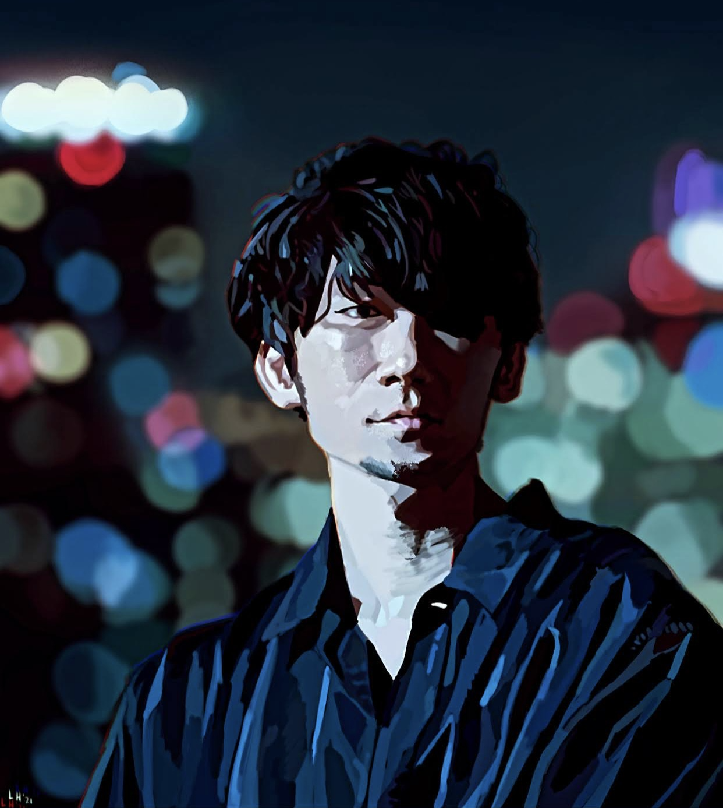

Artist Statement
Leslie A. Hurtado is a Mexican American artist from the Rio Grande Valley located in deep south Texas. She aspires to push art boundaries by keeping to the usual format of portraiture through different media.
Featured Traditional Works
Featured Digital Works
